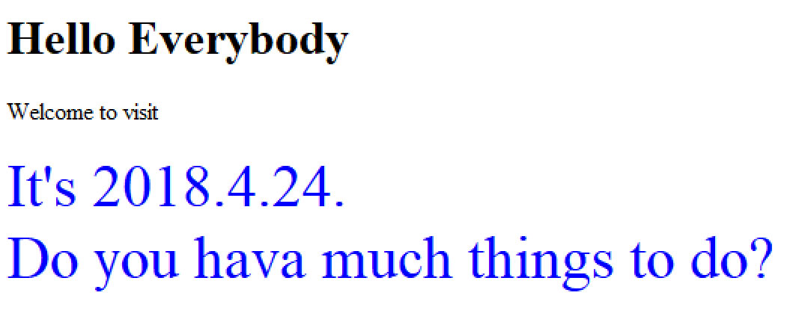

JavaScript简介
JavaScript示例
JavaScript认识
- JavaScript 是一种脚本语言，用以编写客户端程序；
- JavaScript 程序嵌在HTML中使用，解释性，不需预编译；
- JavaScript 基于对象，由事件驱动；
- JavaScript主要功能有：
网页中使用JavaScript
JavaScript脚本格式
JavaScript代码行
</script>
|
<----假设命名为star.html |
脚本的位置
脚本一般放在 head 部分（推荐）， 也可放在 body部分。
<html> <body> |
脚本可单独写在外部文件(.js)中
外部文件的使用：
<script type="text/javascript" src="xxx.js">....</script>
脚本中的注释
在JavaScript脚本中同css一样可由/*…..*/包含多行注释。
练习1：用JavaScript脚本在网页上显示数行文字，诸如：”大家好，欢迎浏览“等。
分别尝试如下方法：
- JavaScript脚本写在HTML文件中（head或body中）
- JavaScript脚本存成文件，在HTML中导入脚本
常用信息对话框
信息提示框
alert("文本") 常用于确保用户可以得到某些信息。例： 例：修改star.html，在三角形显示前显示信息提示窗。 此例为Chrome浏览器显示--> |
 |
alert("JavaScript程序正在运行中...\n程序现在暂停\n单击确定按钮，程序将会继续运行，并显示一个三角形。");
此例为IE浏览器显示--> |
信息确认框
confirm("文本") 确认框用来让用户进行信息验证或接受信息。 返回值：
例：将显示三角形的JS程序嵌在一个带id（设为star）的div中，在显示三角形前作颜色选择，并直接更改此div的color样式值。 <div id="star"> |
|
| if(confirm("Would you like to show in red?")){ document.getElementById("star").style.color="red"; } |
信息输入框
prompt("文本","默认值") 提示框常用于提示用户在进入页面前输入某个值。 返回值：
例：在三角形输出前再加上像素尺寸的输入，以确定三角形中星号的大小。 document.getElementById("star").style.fontSize=prompt("Please input the font size what you wanna show:")+"px"; |
练习2：如下图示，网页上日期和其后文本由javaScript程序生成。在显示前通过confirm框选定颜色，并由promt框确定字体大小。（也可尝试用id设置样式）
|
 <div id="date"> |
【关于日期的提示】
|
JavaScript语法基础
javascript中的变量
JavaScript 变量名称的规则
- 变量对大小写敏感（y 和 Y 是两个不同的变量）
- 变量必须以字母或下划线开始
声明（创建） JavaScript 变量
var x; /*声明变量*/
var car,name; /*声明变量*/
var x=5; /*声明变量同时赋数值，声明赋值可分开进行*/
var carname="Hello"; /*声明变量同时赋文本值*/
javascript中的运算
简单运算
赋值运算符：= += -= *= /= %=
字符串连接：+ （包括字符串同数字连接）
| <script type="text/javascript"> x=5+5; document.write(x+"<br>"); x="5"+"5"; document.write(x+"<br>"); x=5+"5"; document.write(x+"<br>"); </script> |
关系运算与逻辑运算
比较运算符：== ===(值和类型全等) != > >= < <=
逻辑运算符：&& || !
条件运算符
javascript中的条件语句（类同C）
if
if…else
if… else if…else
switch
javascript中的循环语句
for
while
do while
| <html> <head> <style> body{ text-align:center;margin:100px; font-size:48px;color:red;} </style> </head> <body> <script type="text/javascript"> var d = new Date(); var time = d.getHours(); if (time>=4&&time<11) document.write("Good morning"); else if (time>=11 && time<18) document.write("Good afternoon"); else if(time>=18 && time<20) document.write("Good evening!"); else document.write("Good night!"); document.write("<br>Now is "+time+":"+d.getMinutes()+":"+d.getSeconds()); </script> </body> </html> |
参考网址：http://www.w3school.com.cn/js/jsref_obj_date.asp
函数定义与使用
函数的定义
function 函数名(参数){ |
函数的使用
函数的使用方式：某事件发生时调用一个特定的函数。
| <html> <head> <meta http-equiv="Content-Type" content="text/html; charset=utf-8" /> <script type="text/javascript"> function displayMessage(){ alert("Hello, Welcome you!") } </script> </head> <body> <div onclick="displayMessage()" style="width:180px; font-size:30px"> Click me!</div> </body> </html> |
<html> <head> <meta http-equiv="Content-Type" content="text/html; charset=utf-8" /> <script type="text/javascript"> function checkLeave(){ event.returnValue="Are you sure to leave?"; } </script> </head> <body onbeforeunload="checkLeave()"> </body> </html> |
常用事件
| 事件名 | 事件发生时机 |
|---|---|
| onabort | 图像加载被中断 |
| onblur | 元素失去焦点 |
| onchange | 用户改变域的内容 |
| onclick | 鼠标点击某个对象 |
| ondblclick | 鼠标双击某个对象 |
| onerror | 当加载文档或图像时发生某个错误 |
| onfocus | 元素获得焦点 |
| onkeydown | 某个键盘的键被按下 |
| onkeypress | 某个键盘的键被按下或按住 |
| onkeyup | 某个键盘的键被松开 |
| onload | 某个页面或图像被完成加载 |
| onmousedown | 某个鼠标按键被按下 |
| onmousemove | 鼠标被移动 |
| onmouseout | 鼠标从某元素移开 |
| onmouseover | 鼠标被移到某元素之上 |
| onmouseup | 某个鼠标按键被松开 |
| onreset | 重置按钮被点击 |
| onresize | 窗口或框架被调整尺寸 |
| onselect | 文本被选定 |
| onsubmit | 提交按钮被点击 |
| onunload | 用户退出页面 |
练习3：设计一个Welcome()函数，在网页打开时显示“欢迎光临！”的消息框。
脚本应用实训
图片切换
参照flip.html，对仿制的cpsc.yale.edu页面上的图片进行自动轮流切换。
JavaScript时钟
利用clock.js自行配色和设定尺寸，制作JavaScript时钟。图片选择
对selectpic.html进行修改，增加到六个图片，改变显示尺寸。
平移图片
利用showpic.js，制作了自动平移图片的网页showpic.html。分析之，变化图片显示尺寸，点击图片时在新窗口打开图片。
学习与研究：
- 图片平移速度的改变
- 图片显示大小的改变
- 平移方向可否为纵向？
- 点击缩略图在同一页上显示大图的实现
延伸学习与练习
延伸学习
JavaScript特效实现
参考 http://www.codefans.net/jscss/，给自己的网页实现JS网页特效。
如：禁止右键、 禁止网页复制、进度条、日历等。
| Last | Home | Next |
©2012-2018 Yang Peili. All rights reserved. contact me